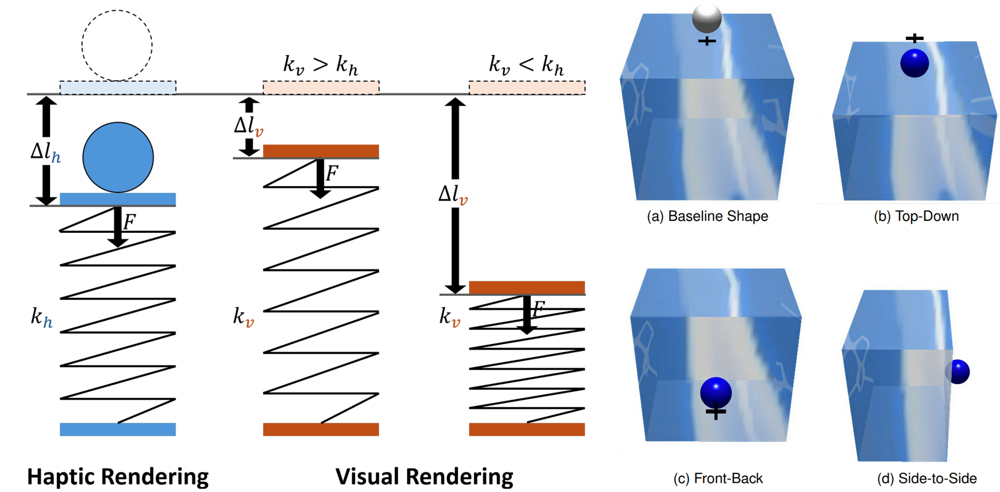
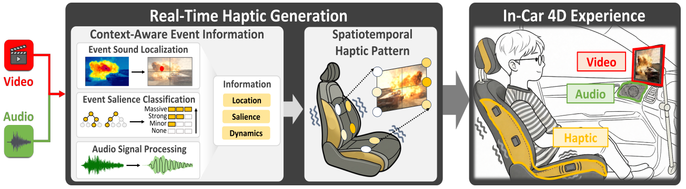

1 / 1
Junwoo Kim
Education
Ph.D. Student in Computer Science & Engineering
Pohang University of Science and Technology (POSTECH), South Korea
Interaction Lab · Advisor: Prof. Seungmoon Choi
B.S. in Electronics Engineering
Pusan National University (PNU), South Korea
Research Profile
I design and build haptic systems and interactive applications for practical use. My research in human–computer interaction integrates sensing, signal processing, and multimodal AI to connect physical measurements and audiovisual content with haptic feedback. I develop pipelines that span haptic rendering, real-time system implementation, application integration, and validation through physical measurements and user studies. Alongside this systems research, I investigate haptic perception to understand how people interpret tactile cues and to guide the design of effective, usable haptic experiences.
# HCI
# Haptics
# AI
# System
# Sensing
# Perception
# XR/VR/AR
Current Research
01
Audiovisual-to-Haptic Rendering System
# System# Multimodal AI# Haptic Rendering# Dataset
02
3D Reconstruction of Haptic Object for Digital Twin
# Sensing# Haptic Property# 3D Reconstruction
03
Correlation Analysis with 3D DIC for Contact Dynamics and Perception
# Physical Contact# Haptic Perception# Sensing
04
Haptic Rendering with Funneling Illusions in VR
# VR# Haptic Rendering# Full-body
emoji_events Research Output
7
Accepted Papers
3 submitted papers
2
Patent Applications
Ongoing Work
3 submissions-
PaperConference
Submitted to IEEE VR'27. 1st author
General Egocentric Direction
-
PaperConference
Submitted to IEEE VR'27. Co-author
4D Cinematic Experiences
-
PaperJournal
Submitted to Extreme Mechanics Letters. 1st author
Finger Contact Dynamics and Perception Analysis
Research Updates
Scroll for earlier updates-
PatentApplication
-
PaperJournal
Our paper was published in IEEE TVCG. Co-author
-
PaperConference
Our paper was accepted to ACM UIST'26. 1st author
-
PaperJournal
Our paper was published in IEEE ToH. 1st author
-
PatentApplication
-
PaperConference
-
PaperJournal
Our paper was published in IEEE ToH. Co-author
-
PaperConference
-
PaperConference
license Patents
P1
Apparatus And Method For Controlling Haptic Feedback
Publications
No papers in this category.
2027 Ongoing work
Submission
Manuscript submitted
IEEE VR'27Conference Submission
- #Perception
- #Haptic Rendering
- #VR
Research topic
General Egocentric Direction
IEEE Conference on Virtual Reality and 3D User Interfaces (IEEE VR), 2027
Submission
Manuscript submitted
IEEE VR'27Conference Submission
- #System
- #Haptic Rendering
- #VR
Research topic
4D Cinematic Experiences
IEEE Conference on Virtual Reality and 3D User Interfaces (IEEE VR), 2027
Submission
Manuscript submitted
Extreme Mechanics LettersJournal Submission
- #Sensing
- #Perception
- #Contact Mechanics
Research topic
Finger Contact Dynamics and Perception Analysis
Extreme Mechanics Letters, 2027
2026 3 papers

IEEE TVCGJournal
- #Perception
- #Haptic Rendering
- #VR
J3Perceiving Compliance in Virtual Reality: Effects of Interaction Direction and Sensory Discrepancy on Visuo-Haptic Weighting
IEEE Transactions on Visualization and Computer Graphics (IEEE TVCG), 2026
Special issue of IEEE ISMAR 2026
Acceptance rate: 16%
Citation · BibTeX
@article{Jung26Compliance,
title = {{Perceiving Compliance in Virtual Reality: Effects of Interaction Direction and Sensory Discrepancy on Visuo-Haptic Weighting}},
author = {Jung, Taehyeong and Lee, Jiwan and Kim, Junwoo and Choi, Seungmoon},
journal = {IEEE Transactions on Visualization and Computer Graphics},
year = {2026},
publisher = {IEEE},
note = {IEEE ISMAR 2026}
}Provisional citation · Bibliographic details pending

ACM UIST'26Conference
- #Haptic Rendering
- #System
- #Multimodal AI
C4CineHaptic: Context-Aware Real-Time Audiovisual-to-Haptic Rendering System for In-Vehicle 4D Cinematic Experiences
ACM Symposium on User Interface Software and Technology (ACM UIST), 2026
Acceptance rate: 20.1%
Citation · BibTeX
@inproceedings{Kim26CineHaptic,
title = {{CineHaptic: Context-Aware Real-Time Audiovisual-to-Haptic Rendering System for In-Vehicle 4D Cinematic Experiences}},
author = {Kim, Junwoo and Kim, Hyunuk and Oh, Hyun-Bin and Kang, Jeonggoo and Oh, Tae-Hyun and Choi, Seungmoon},
booktitle = {Proceedings of the ACM Symposium on User Interface Software and Technology},
year = {2026},
publisher = {Association for Computing Machinery},
note = {Accepted}
}Provisional citation · Accepted

IEEE ToHJournal
- #Haptic Perception
- #Vibrotactile
- #Haptic Suit
J2Representing Egocentric Directions with Torso-Applied Vibrotactile Stimuli
IEEE Transactions on Haptics (IEEE ToH), 2026 · Vol. 19, Issue 2 · pp. 249–261
Citation · BibTeX
@ARTICLE{Kim26Egocentric,
author={Kim, Junwoo and Park, Jaejun and Park, Chaeyong and Park, Junseok and Choi, Seungmoon},
journal={IEEE Transactions on Haptics},
title={Representing Egocentric Directions with Torso-Applied Vibrotactile Stimuli},
year={2026},
volume={19},
number={2},
pages={249-261},
doi={10.1109/TOH.2026.3667214}}BibTeX: IEEE Xplore · Cite This
2024 2 papers

EuroHaptics'24Conference
- #Haptic Perception
- #Vibrotactile
- #Haptic Suit
C3Human Identification Performance of Vibrotactile Stimuli Applied on the Torso Along Azimuth or Elevation
EuroHaptics Conference (EuroHaptics), 2024 · Vol. 14768 · pp. 3–15
Citation · BibTeX
@InProceedings{Kim25Azimuth,
doi={10.1007/978-3-031-70058-3_1},
author="Kim, Junwoo
and Park, Jaejun
and Park, Chaeyong
and Park, Junseok
and Choi, Seungmoon",
editor="Kajimoto, Hiroyuki
and Lopes, Pedro
and Pacchierotti, Claudio
and Basdogan, Cagatay
and Gori, Monica
and Lemaire-Semail, Betty
and Marchal, Maud",
title="Human Identification Performance of Vibrotactile Stimuli Applied on the Torso Along Azimuth or Elevation",
booktitle="Haptics: Understanding Touch; Technology and Systems; Applications and Interaction",
year="2025",
publisher="Springer Nature Switzerland",
address="Cham",
pages="3--15",
isbn="978-3-031-70058-3"
}
IEEE ToHJournal
- #Haptic Rendering
- #System
- #Game
J1Telemetry-Based Haptic Rendering for Racing Game Experience Improvement
IEEE Transactions on Haptics (IEEE ToH), 2024 · Vol. 17, Issue 1 · pp. 72–79
Citation · BibTeX
@ARTICLE{Lee24Telemetry,
author={Lee, Jiwan and Kim, Junwoo and Kang, Jeonggoo and Jo, Eunsoo and Park, Dong Chul and Choi, Seungmoon},
journal={IEEE Transactions on Haptics},
title={Telemetry-Based Haptic Rendering for Racing Game Experience Improvement},
year={2024},
volume={17},
number={1},
pages={72-79},
doi={10.1109/TOH.2024.3357885}}BibTeX: IEEE Xplore · Cite This
2023 2 papers

IEEE WHC'23Conference
- #Haptic Perception
- #Vibrotactile
- #Full-Body
C2Information Transfer of Full-Body Vibrotactile Stimuli: An Initial Study with One to Three Sequential Vibrations
IEEE World Haptics Conference (IEEE WHC), 2023 · pp. 41–47
Citation · BibTeX
@INPROCEEDINGS{Park23FullBody,
author={Park, Jaejun and Kim, Junwoo and Han, Sangyoon and Park, Chaeyong and Park, Junseok and Choi, Seungmoon},
booktitle={2023 IEEE World Haptics Conference (WHC)},
title={Information Transfer of Full-Body Vibrotactile Stimuli: An Initial Study with One to Three Sequential Vibrations},
year={2023},
volume={},
number={},
pages={41-47},
doi={10.1109/WHC56415.2023.10224391}}BibTeX: IEEE Xplore · Cite This

IEEE WHC'23Conference
- #Haptic Perception
- #Vibrotactile
- #Haptic Suit
C1Human Recognition Performance of Simple Spatial Vibrotactile Patterns on the Torso
IEEE World Haptics Conference (IEEE WHC), 2023 · pp. 20–27
Citation · BibTeX
@INPROCEEDINGS{Kim23Patterns,
author={Kim, Junwoo and Kim, Heeyeon and Park, Chaeyong and Choi, Seungmoon},
booktitle={2023 IEEE World Haptics Conference (WHC)},
title={Human Recognition Performance of Simple Spatial Vibrotactile Patterns on the Torso},
year={2023},
volume={},
number={},
pages={20-27},
doi={10.1109/WHC56415.2023.10224430}}BibTeX: IEEE Xplore · Cite This